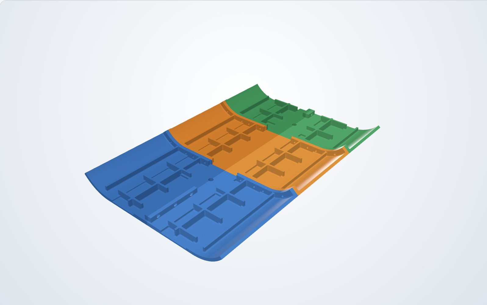
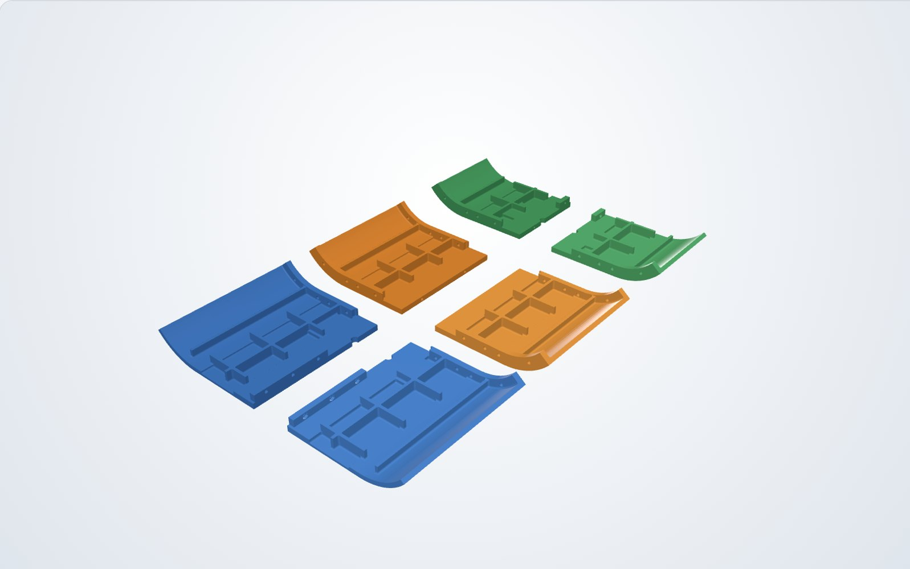
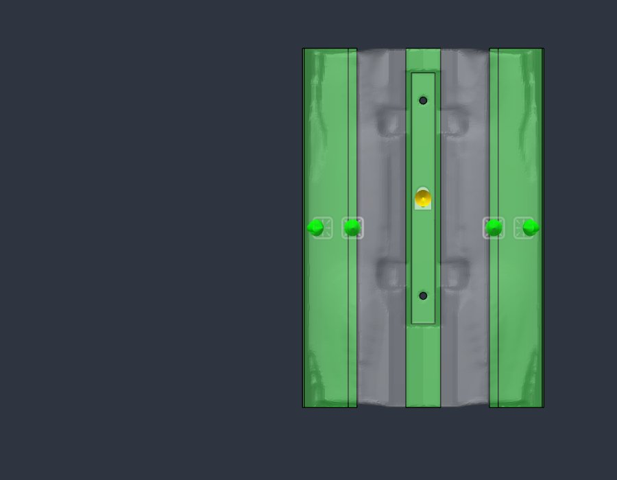
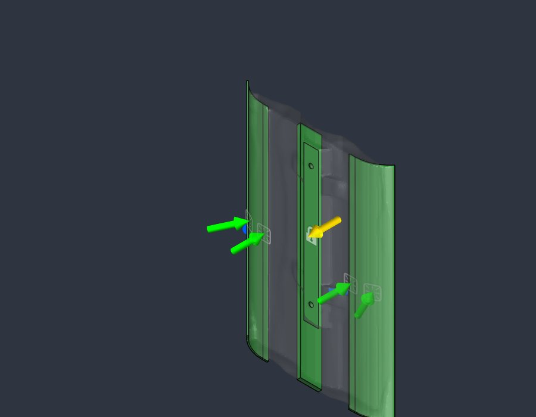
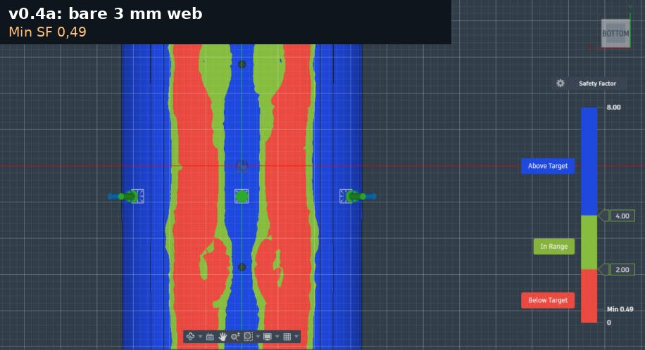
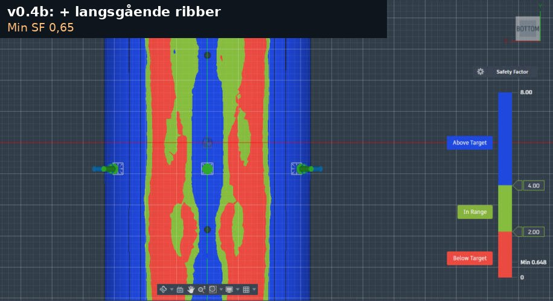
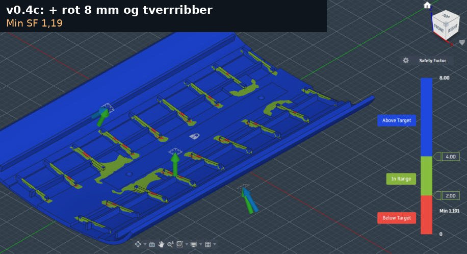
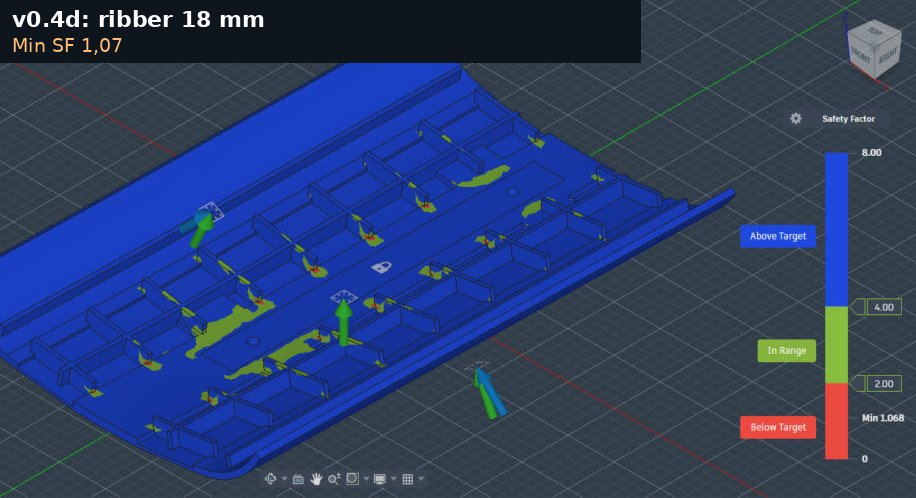
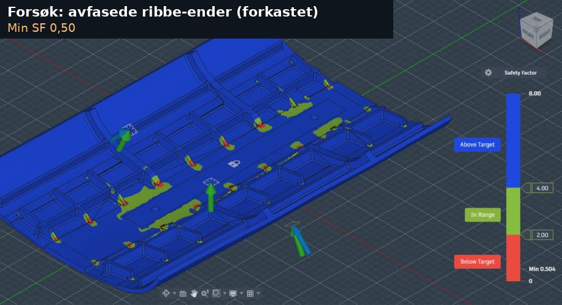
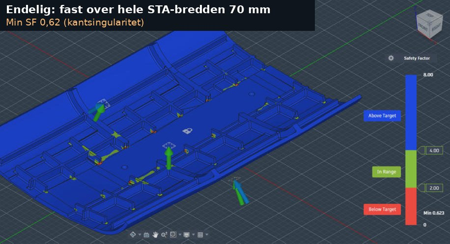

En 3D-printet plate som sitter mellom en Tecline Donut 22-dobbeltvinge og STA-en på en Halcyon backplate. Platen gir vinga samme støtte som et D12-dobbelsett, slik at sidene ikke bretter seg rundt en enkeltflaske («taco»). Den printes på en Bambu P2S i seks deler som skrues sammen. Ingen lim.
Ikke testet i vann. Platen er modellert, simulert og klargjort for print, men ennå ikke printet eller prøvd på et ekte dykk. Vingeomrisset og lastene er anslått. Tallene sammenligner oppsett; de er ikke en sertifisering.
Se platen samlet, sprengt eller som seks enkeltdeler slik de ligger på printeren. Trykk på en del i listen eller i modellen for å se mål og volum.


En Donut 22 er laget for dobbelsett. På et D12-sett ligger vinga mot to flasker (Ø 171 mm, 215 mm mellom sentrene), og sidene får god støtte. Med en enkeltflaske på en 70 mm bred STA har vinga ingenting å legge seg mot på sidene. Når den fylles, bretter sidene seg opp rundt flaska som et taco-skall. Det gir trim-problemer og gass som blir fanget i brettene.
Målet: en plate under STA-en som gir vinga samme form å legge seg mot som et D12-sett, som printes på en Bambu P2S (256 × 256 × 256 mm) og som skrues sammen.
| Utstyr | Mål brukt i modellene |
|---|---|
| Halcyon standard backplate | 393 × 260 mm, bolter 280 mm c/c, 3,7 mm (kalibrert mot vekt) |
| Tecline STA | 70 × 360 mm, 20 mm dyp, bolter 5/16-18; med platen trengs 1,5" bolter |
| Tecline Donut 22 | Omriss ikke oppgitt av produsent; anslått og kalibrert til 22 L |
| D12-referanse | 2 × Ø 171 mm, 215 mm c/c |
Tanke: Det enkleste som kan virke: en flat plate (380 × 320 mm) under STA-en som gjør støtteflaten bredere.
Funn: En flat plate støtter bare der den er. Vinga på et D12-sett ligger mot to runde flasker, så kantene må bue fram mot flaska for å gi samme form.
Tanke: Kopier vingesida av et D12-sett: flat mellom ±107,5 mm (der flaskene står), deretter en bue med radius 85,5 mm (halve flaskediameteren) 47° framover. 340 × 320 mm i seks deler med overlappskjøt og M5 senkskruer.
Funn: Taco-testen (under) viste at formen virker der platen sitter, men vinga er bredest ca. 150 mm under boltene, altså under platen. Snittet ble 42 mm tupphøyde mot 19 mm for D12.
Tanke: Dekk hele vinga (−300 til +215 mm langs ryggen). Et søk med duksimuleringen testet lengde og buevinkel: 57° var ikke bedre enn 50°, men lengden var avgjørende. Siden vinga spenner over hull, prøvde vi en åpen ramme: ryggstav, fem tverrarmer og to buede skinner.
Funn: Rammen ga 24,4 mm tupphøyde, like godt som hel plate (23,6 mm), med 23 % mindre plast. Men rammen var ni deler med mange skjøter, og ingen styrkeanalyse ennå.
Tanke: La Fusion finne lastveien. Studien fikk vingeflatene og STA-setet som faste områder, flaske, STA og bolter som hindringer, og fire lasttilfeller, blant annet tacokraften sideveis.
Funn: Skyberegningen krevde 11 Cloud Credits som kontoen ikke hadde, så vi brukte den lokale forhåndsvisningen. Den la et sammenhengende tynt skall fra ryggen ut til buene, fortykket nær STA-endene. Rammen med hull var altså ikke den beste lastveien for sideveis last. Det ble grunnlaget for v0.4.
Tanke: Følg forhåndsvisningen: et 3 mm skall med D12-buer, 8 mm ryggstav og skinner, bygget parametrisk i Fusion (alle mål som sta_-parametere). Styrken testes lokalt i Fusion med tacolasten.
Funn: Bare skall holdt ikke (SF 0,49). Lengdegående ribber hjalp nesten ikke, fordi taco er bøying ut fra STA-en, om lengdeaksen. Tverrribber og en tykk rot ut til STA-kanten løste det. Se styrkeanalysen.
Tanke: Del platen der lasten er lav: midtskjøten ligger under STA-en (STA-boltene klemmer den), og tverrskjøtene ligger på tvers av bøyeretningen. Skjøtene får 16 mm vegger med M4-skruer og sekskantede mutterlommer, slik at alt kan skrus sammen uten lim.
Funn: Alle 20 skruehull er kontrollert med skript i Fusion: hullet går gjennom begge deler, veggen er hel rundt hullet, og det er plass til hode og mutter. Delene overlapper ikke (interferenssjekk 0).
Samme Donut 22 på Halcyon-plate i fire oppsett, med ekte duksimulering: stoffet strekker seg ikke, oppdriften sitter i gassringen, og ingenting går gjennom flasker, STA, plate eller backplate. Taco-målet er hvor høyt vingetuppen klatrer mot flaska.
Venstre er bunnen av vinga, høyre er toppen. Det grå feltet er platens utstrekning (−300 til +215 mm). Toppen (over +230 mm) løfter seg også på D12, rundt ventilene. v0.4 har samme utstrekning og bue som «hel plate, full lengde».
| Oppsett | Langs ryggen | Bue | Snitt tupphøyde |
|---|---|---|---|
| D12 (referanse) | – | – | 18,7 mm |
| Enkel + STA, ingen plate | – | – | 103,7 mm |
| v0.2 hel | −160 … +160 | 47° | 42,4 mm |
| Hel, kortere topp | −300 … +160 | 57° | 31,5 mm |
| Ramme v0.3 | −300 … +215 | 50° | 24,4 mm |
| Hel, full lengde (geometrien til v0.4) | −300 … +215 | 50° | 23,6 mm |
Forenklinger: vingeomrisset er anslått, ingen strømning i gassen, symmetrisk last. Sammenligningen mellom oppsett er mer pålitelig enn de absolutte millimeterne.


| Oppsett | Innhold |
|---|---|
| Bevares | Vingeflate høyre/venstre (D12-buer), ryggstav, STA-sete |
| Hindringer | Vingeside, flaske, STA, bolter og muttere, grenser for P2S |
| Last 1–3 | Trykk 2,4 kPa, 10 kPa og 4,8 kPa på én side (vingeløft) |
| Last 4 | Last 1 + tacokraft ±100 N innover og +100 N opp på hver bue |
| Mål | Minst mulig masse, SF 2,5, forskyvning ≤ 2 mm; ABS; additiv produksjon (Z+, 45°, 3 mm) |
Den fulle skyberegningen er ikke kjørt (krever Cloud Credits). Forhåndsvisningen er grov, men den pekte tydelig mot et sammenhengende skall.
| Lastoppsett | Verdi |
|---|---|
| Fastholdt | STA-setet på ryggen (til slutt hele STA-flaten, 70 × 360 mm) |
| Vingeløft | Trykk 0,0024 MPa (2,4 kPa) på hele vingesida |
| Taco | 100 N sideveis innover + 100 N opp på hver bueflate |
| Materiale / mål | ABS fra Fusion-biblioteket, mål SF ≥ 2 mot flytegrense |
| Løser | Lineær statisk, lokal løsning (0 Cloud Credits), standard nett |
| Steg | Endring | Volum | Min SF | Hva det lærte oss |
|---|---|---|---|---|
| a | 3 mm skall, ingen ribber | 1020 cm³ | 0,49 | Hele skallet mellom STA og skinne er under mål |
| b | + lengderibber x = ±60 mm | 1055 cm³ | 0,65 | Feil retning: taco bøyer om lengdeaksen |
| c | + 8 mm rot ut til STA-kant og 9 tverrribber per side | 1138 cm³ | 1,19 | Nesten hele platen over SF 4; topper ved ribbe-ender |
| d | Ribber 18 mm høye | 1181 cm³ | 1,07 | Bare skarpe hjørner igjen |
| e | + skjøtevegger, R2-runding, avfasede ribbe-ender | 1237 cm³ | 0,50 | Avfasing gjorde det verre: ribben trengs høy ved roten. Fjernet |
| f | Fastholdt over hele STA-bredden (70 mm, ikke 34 mm) | 1243 cm³ | 0,62 | Bare en tynn linje langs kanten av fastholdningen er under mål |






I en lineær analyse blir spenningen der «helt fast» møter «helt fri» i prinsippet uendelig, og tallet vokser når nettet blir finere. I virkeligheten er det en STA-kant med radius og litt fjæring. Derfor regnes snittet ved STA-kanten for hånd, per tverrribbe (60 mm deling, T-tverrsnitt 4 × 15 mm ribbe på 60 × 3 mm skall):
q ≈ 2,4 kPa · 0,138 m + 100 N / 0,515 m ≈ 0,33 + 0,19 kN/m M ≈ (23 + 22) N·m/m · 0,06 m ≈ 2,7 N·m per ribbe I ≈ 4905 mm⁴, c = 14,25 mm → W ≈ 344 mm³ → σ = M/W ≈ 2700/344 ≈ 7,8 MPaMot flytegrensen for ABS (rundt 30–40 MPa) gir det SF ≈ 4. Analysen er kjørt på platen som ett stykke, før delingen og skruehullene.
Ikke gjort ennå: forskyvning er ikke lest ut, simulering i PETG/ASA, og en analyse av de seks delene med kontakt i skjøtene.
| Fil | Innhold |
|---|---|
| Fulle printfiler (NTNU) | 6 × 3MF, 6 × STL, samlet STEP og monteringsliste (ligger på NTNU-området, ikke i GitHub) |
| STA-plate_v0.4_print.zip | Alt over i én fil |
| sta-plate-v04.glb | Visningsmodellen over (6 deler, mm) |
| taco-oppsett.glb | Taco-testens fire oppsett med simulert vinge |
Fusion-modellen «STA-plate v0.4» er parametrisk: alle hovedmål ligger som sta_-parametere for videre utvikling og tilbehør.
| Dato | Hva | Resultat |
|---|---|---|
| 24.11.2026 | Printklar v0.4 | 6 deler, 20 × M4 med mutterlommer, 6 styrepinner, ingen lim; interferens 0 |
| 24.11.2026 | Styrkeanalyse v0.4 | SF 0,49 → nesten alt over 4 med tverrribber og tykk rot; håndregning SF ≈ 4 ved STA-kant |
| 24.11.2026 | Generativt design | Lokal forhåndsvisning: sammenhengende skall er beste lastvei |
| 23.11.2026 | Rammeplate v0.3 | 24,4 mm tupphøyde, 23 % mindre plast enn hel plate |
| 23.11.2026 | Duksimulering | Enkel + STA 103,7 mm, D12 18,7 mm, v0.2 42,4 mm |
| 23.11.2026 | Plate v0.2 | D12-kontur, 6 deler; for kort |
| 23.11.2026 | Start | Mål: enkeltflaske som D12 på Donut 22, printbar på P2S |